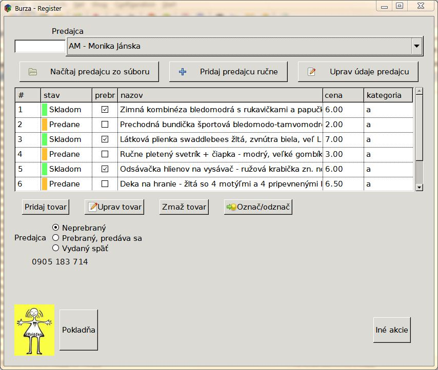
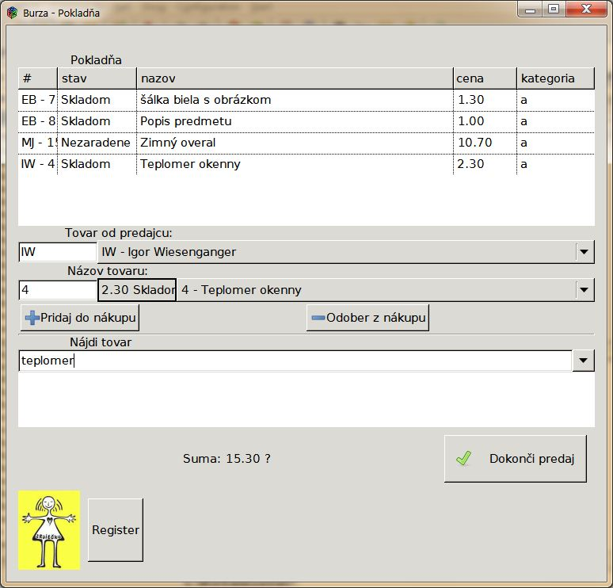

Burza je program pre inventarizáciu a predaj tovaru pre viacerých predajcov.
Je vytvorený v spolupráci s
Materským centrom Srdiečko Trenčín a používa sa pri
jarných a jesenných burzách detského oblečenia.
Ak máte otázky tak ich rád zodpoviem na e-maile miro.janosik zavinac gmail.com alebo na
tel.č. 0908 18 47 47
s pozdravom, Miro Janosik
Verzie na stiahnutie:
Obrázky:

Verzia 1.01

Verzia 1.01